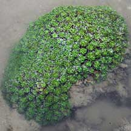
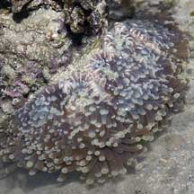
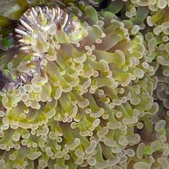

|
|
| hard corals text index | photo index |
| Phylum Cnidaria > Class Anthozoa > Subclass Zoantharia/Hexacorallia > Order Scleractinia |
| Euphyllid
corals Family Euphylliidae updated Nov 2019 Where seen? These hard corals are sometimes seen on some of our Southern shores. Some species have tentacles with a distinctive U-shaped tip, others lack this. Features: While most hard corals are best identified by looking at details of their skeleton, members of the Family Euphyllidae are more easily told apart by looking at the structure of their tentacles. The Family Euphylliidae was only established in 2000. Euphyllia was originally included in Family Carophyllidae. Physogyra and Plerogyra species now no longer in this family. Here's more on how to tell apart the Euphyllia species. What do they eat? All members of Family Euphyllidae harbour microscopic, single-celled symbiotic algae (zooxanthellae) within their bodies. The algae undergo photosynthesis to produce food from sunlight. The food produced is shared with the host, which in return provides the algae with shelter and minerals. It is believed this additional source of nutrients from the zooxanthellae help hard corals produce their hard skeletons and thus expand their size faster. Status and threats: All Euphyllid corals recorded for Singapore are listed as globally threatened by the IUCN. Like other creatures of the intertidal zone, they are affected by human activities such as reclamation and pollution. Trampling by careless visitors, and over-collection also have an impact on local populations. |
| Some Euphyllid corals on Singapore shores |
 Galaxy coral |
 Branching anchor coral |
 Torch coral |
 Frog spawn coral |
| Family
Euphylliidae recorded for Singapore from Danwei Huang, Karenne P. P. Tun, L. M Chou and Peter A. Todd. 30 Dec 2009. An inventory of zooxanthellate sclerectinian corals in Singapore including 33 new records **the species found on many shores in Danwei's paper. in red are those listed as threatened on the IUCN global list. *from WORMS.
|
|
Links
|